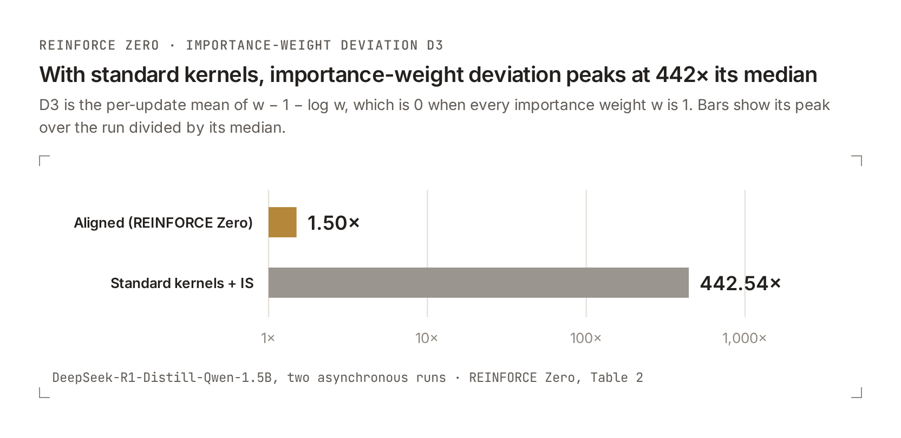
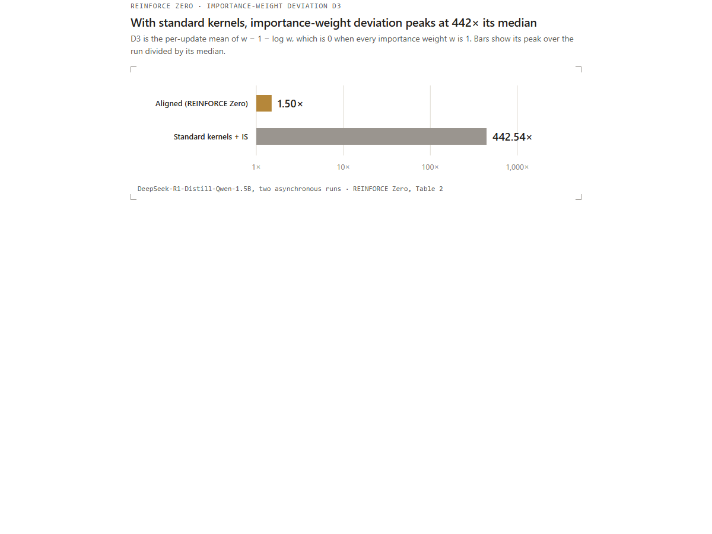
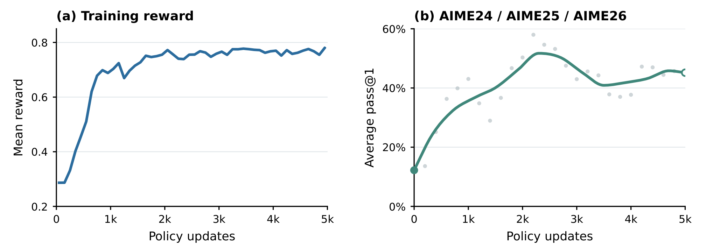

零不匹配与简单异步强化学习：REINFORCE Zero、DeepSeek-V4.1 和 Kimi K3.1

摘要
- 异步强化学习（RL）速度更快，但训练所用样本由旧版本权重生成。
- rollout 与 learner 之间的差异包含两部分。权重滞后（weight lag）平滑变化，可由不裁剪的重要性采样（importance sampling，IS）控制；内核不匹配（kernel mismatch）则意味着 rollout 与训练端在相同权重下算出不同数值，它会剧烈波动，而且使用 IS 后仍然存在。
- 对齐内核后，不裁剪 IS 可以纠正剩余的权重滞后，无需样本拒绝门控。REINFORCE Zero（NVIDIA Research 与 Inferact）可稳定训练 20,000 次更新，支持 policy lag 64，训练步骤吞吐量达到采用对齐内核的同步训练的 2.40 倍。
- 零不匹配现已覆盖 DeepSeek-V4.1-Flash（DAPO rollout 步骤与快速基线的差距不超过 10%）、首日支持的 Kimi K3.1，以及 AMD MI355X 上的 DeepSeek-V4-Flash 与 Kimi K3.1。
- 所有资料均已收录在 Inferact/zero-mismatch-rl。
1. 从同步走向异步
上个月，我们展示了 rollout 与训练可以做到完全一致。在 DeepSeek-V4-Flash 上，vLLM 与训练器使用高速内核，对每个采样 token 都逐比特地产生相同的 logprob，而 rollout 吞吐量仅下降 8.7%。现在已有一个 agent skill，可以针对每个新模型完成这种对齐。
上一篇文章讨论的是同步 RL。同步 RL 不存在权重滞后，因此零不匹配消除了 rollout 与训练之间唯一的差异。本文讨论异步 RL：它速度更快，但在设计上属于离策略（off-policy）训练。那么，零不匹配在异步 RL 中是否仍然重要？
NVIDIA Research 与 Inferact 的一篇新论文（Jian Hu 等）给出了答案：《REINFORCE Zero：内核对齐通过重要性采样解锁稳定的异步强化学习》。第 2 至第 4 节中的所有数据均来自该论文。
2. 异步 RL：速度更快，但属于离策略训练
在同步 RL 中，rollout 与训练交替进行，双方都要等待另一方完成。异步 RL 则让两者同时运行：learner 持续更新时，rollout 也持续生成数据。
代价是权重滞后。由权重版本 $v$ 生成的样本，要到版本 $k>v$ 时才参与训练。差值 $k-v$ 并不小：REINFORCE Zero 在数学推理任务上使用滞后 2 和 8，在智能体工具调用任务上使用滞后 64。
因此，learner 总是在使用旧策略产生的样本训练。标准修正方法是重要性采样（IS）：对每个 token 乘以 $\hat{\pi}/\pi$，即 learner 为该 token 计算的概率，除以 rollout 采样时记录的概率。问题在于，这种修正是否覆盖了全部差异。
3. 行为不同的两种差异
learner 与 rollout 的 logprob 差异可以拆成两项：
log π̂_k - log π_v = (log π̂_k - log π̂_v) + (log π̂_v - log π_v)
权重滞后 内核不匹配
$\hat{\pi}$ 表示 learner 的计算，$\pi$ 表示 rollout 引擎的计算。第二项是在相同权重 $v$ 下比较两套计算。
权重滞后平滑变化。 它可以在最近若干次更新上形成望远镜式展开；每次更新较小时，它会沿着平滑变化的策略轨迹移动。IS 正是用来纠正这类差异的。
内核不匹配会发生波动。 它取决于批次组成和数值执行方式，所以即使 rollout 与 learner 使用相同权重，也会引入波动。
查看静态备用图

图 1：两次 DeepSeek-R1-Distill-Qwen-1.5B 异步训练中，重要性权重偏差 $D_3$ 的峰值与中位数之比（对数刻度）。对齐内核时为 1.50 倍，标准内核时为 442.54 倍。来源：REINFORCE Zero，表 2。
REINFORCE Zero 论文用 $D_3$ 衡量这种现象：在每次更新中，对所有 token 的 $w-1-\log w$ 求平均，其中 $w$ 是重要性权重。当 $w=1$ 时，每个 token 的这一项为 0；$w$ 离 1 越远，该值越大。使用对齐内核时，$D_3$ 的峰值仅为其中位数的 1.50 倍：不裁剪 IS 能让剩余的权重滞后差异保持平滑、受控。使用标准内核时，峰值达到中位数的 442.54 倍：即使使用 IS，巨大的重要性权重波动仍然存在。
因此，应当先消除内核项。剩下的只有权重滞后，普通的不裁剪 IS 就能纠正它，无需截断，也无需拒绝门控。
4. REINFORCE Zero
REINFORCE Zero 是从上述分析直接得到的方法，由三部分组成。
方法
- 对齐内核。 rollout 与 learner 对相同权重和 token 计算出相同 logprob，与上一篇文章相同。内核项严格为 0，剩余差异全部来自权重滞后。
- 用 token 级、不裁剪 IS 纠正权重滞后。 rollout 已记录每个采样 token 的 logprob。learner 用自己算出的概率除以该记录值，并直接使用这个比率，不做截断，也不过滤样本。
- 优化普通 REINFORCE。 每个回答的 advantage 等于其奖励减去所在组的平均奖励；在回答内部对 token 求平均。不使用价值模型，也不设置拒绝门控。
对于包含 $B$ 个回答的批次，令 $A_i$ 为第 $i$ 个回答的 advantage：
L(θ) = -(1/B) Σ_i (1/T_i) Σ_t A_i · π_θ(a_it | h_it) / π_i(a_it | h_it)
这就是完整算法。
为什么使用不裁剪 IS
在固定历史下，为每个采样 token 乘以精确比率 $w=\hat{\pi}/\pi$，可以让更新的期望等于当前策略下的更新。裁剪权重通常会引入偏差。
不过，均值正确的梯度并不足以保证训练稳定。论文在一个高斯模型中推导了精确的更新误差，并表明即使 IS 无偏，不匹配也会放大更新方差、缩小稳定步长范围：同一个步长在无不匹配时能够学习，在有不匹配时却会损失奖励。实验表明，大幅偏移来自内核不匹配（图 1），所以消除内核不匹配，才是不裁剪 IS 保持稳定的关键。
不做对齐会发生什么
论文用标准内核运行了相同的异步 IS：
- 在最初和最后各 1,000 次更新之间，rollout-to-learner KL 的中位数增长 83.33 倍，在线 AIME24 pass@1 从 34.27% 降至 13.96%；使用对齐内核时，它保持平稳。
- 梯度裁剪前的最大梯度范数达到 38.27，而对齐内核时仅为 0.0555。
- 加入序列门控可以稳定训练，但在最后 1,000 次更新中，它拒绝了 24.48% 的序列。REINFORCE Zero 不拒绝任何序列。
在滞后 64 时学习
论文把滞后提高到 64。使用 Qwen3-4B、Python 工具和 16K 上下文时，REINFORCE Zero 可以在 policy lag 64 下训练：一个样本使用的权重最多比 learner 旧 64 个版本。经过 5,000 次更新，模型仍持续学习：最初 100 次更新的平均奖励为 0.287，随后升至约 0.78；AIME24/25/26 pass@1 也在同一训练过程中提高。

图 2（REINFORCE Zero，图 6）：Qwen3-4B 使用 Python 工具、在滞后 64 下完成 5,000 次更新。左：训练奖励，每 100 次更新取平均。右：每 200 次更新检查点上的 AIME24/25/26 等权 pass@1（点）及平滑趋势（曲线）。
结果
| 设置 | 结果 |
|---|---|
| 16 张 GPU、12K 次更新的吞吐量 | 训练步骤吞吐量是采用对齐内核的同步训练的 2.40 倍（68.55 小时对 164.77 小时），质量相当 |
| DeepSeek-R1-Distill-Qwen-1.5B，20K 次推理训练更新 | 在滞后 2 和 8 下保持稳定；rollout-to-learner KL 保持平稳 |
| Qwen3-4B + Python 工具，高滞后 | 在滞后 64 下学习 5,000 次更新；平均奖励由 0.287 升至约 0.78 |
| Qwen3-30B-A3B，带工具的 MoE | 3,000 次更新后，宏平均 pass@1 从 31.29% 升至 71.55% |
| Nemotron-3-Nano-Omni-30B，OSWorld 计算机使用 | 428 次更新后，pass@1 从 50.97% 升至 56.16% |
在 1.5B 推理任务的 6,000 次更新检查点，各变体的结果与分析一致：
| 方法 | 对齐内核 | 异步 | 宏平均 pass@1 |
|---|---|---|---|
| 基础模型 | — | — | 40.29% |
| 同步训练 | 是 | 否 | 48.91% |
| IS | 否 | 是 | 45.32% |
| IS + 序列门控 | 否 | 是 | 46.79% |
| IS + token 门控 | 否 | 是 | 44.59% |
| Score Centering，不使用 IS | 是 | 是 | 47.50% |
| REINFORCE Zero，滞后 2 | 是 | 是 | 48.80% |
| REINFORCE Zero，滞后 8 | 是 | 是 | 48.53% |
异步 REINFORCE Zero 达到了同步训练的水平。所有使用标准内核的变体，无论采用哪种修正方式，结果都更差；使用对齐内核、但不使用 IS 的 Score Centering 则处于两者之间。

图 3（REINFORCE Zero，图 1）。左：宏平均 pass@1。右：rollout-to-learner KL。标准内核 IS 持续向上漂移；REINFORCE Zero 在 20,000 次更新期间保持平稳。
对齐在这里的成本
对齐内核比最快的标准内核更慢。在 OSWorld 上，REINFORCE Zero 的平均每步耗时为 944.25 秒；使用标准内核 IS 和序列门控时为 884.17 秒，前者高 6.8%。论文中的模型使用上一篇文章介绍的 agent skill 完成对齐；训练代码位于 NVIDIA-NeMo/labs-molt。
5. 旗舰模型：DeepSeek-V4.1 与 Kimi K3.1
REINFORCE Zero 以对齐内核为起点，而每个新模型都会带来新的待对齐算子。自上一篇文章以来，两个旗舰模型实现了零不匹配：DeepSeek-V4.1-Flash，以及在发布首日就获得支持的 Kimi K3.1。下面的运行验证了这些模型的对齐；下一步是在它们上面进行长时间异步训练。
下文中的 diff 0 表示 rollout 与训练器对每个采样 token 都逐比特地算出相同 logprob。
DeepSeek-V4.1-Flash：保持发布精度
一致性路径从头到尾保持发布时的精度：FP8 与 MXFP4 权重、MegaMoE、带滑动窗口的稀疏注意力、DSpark 推测解码，以及 CUDA Graph。Megatron-LM 训练器（mLite，由 NVIDIA DevTech 的 Yan Bai 开发）按相同顺序调用 rollout 自身的内核。关键算子是启用前缀缓存时的滑动窗口：智能体 RL 必须开启前缀缓存，而缓存命中与未命中必须得到相同 logprob。
在 16 个节点 × 每节点 4 张 GB200 上，128K 上下文的 SWE-bench Pro 智能体 RL 在每一步都保持 diff 0。对于 DAPO 数学 rollout，每节点 128 条轨迹、回答最长 8K token，一致性 rollout 步骤与快速基线的差距不超过 10%。
Kimi K3.1：首日支持
Kimi K3.1 发布时即获得 vLLM 首日支持，其中也包括零不匹配 RL。最难处理的部分是 KDA 线性注意力：prefill 按块计算，decode 逐 token 计算，两者的舍入方式不同。现在，decode 会针对同一块中的行重复 prefill 的算术运算，因此 prefill、decode 与训练器能够保持一致；无论基础模型，还是在每个模块上应用 LoRA 适配器，都能成立。
在 4 个节点 × 每节点 4 张 GB300 上，带 LoRA 的 100 个 DAPO 步骤始终保持 diff 0，AIME 24/25/26 mean@8 从 0.451 升至 0.664。目前仍在继续优化性能。
6. 超越 NVIDIA：AMD MI355X
零不匹配是内核的属性，并不专属于某一家硬件厂商。在 MI355X 上，与 NVIDIA 平台一样，训练器的 forward 会调用 vLLM 自身的模块和内核，并由 VLLM_BATCH_INVARIANT 在一致性版本和快速版本之间切换。
DeepSeek-V4-Flash 在 4 个节点 × 每节点 8 张 MI355X 上完成了 36 个 GRPO 步骤，期间包括一次断点恢复，始终保持 diff 0。最初只开启 batch-invariant 模式并没有效果；二分排查发现了十种批次差异来源。其中一半是库根据形状选择不同内核（hipBLASLt、AITER/CK、Triton、TileLang），其余包括 indexer 的 top-k、decode 使用了不同于 prefill 的内核，以及 expert-parallel combine 按 rank 到达顺序求和。随后，位保持（bit-preserving）优化把 serving 吞吐损失从 62%～66% 降至 7.4%～10.1%。配置和镜像见 verl#8505。
Kimi K3.1 在 2 个节点 × 每节点 8 张 MI355X 上运行 GB300 配置：每层（包括专家）使用 LoRA r32，冻结 MXFP4 基础权重，并逐 token 检查，每一步都保持 diff 0。它需要两项修复：一是让训练器的 bmm 与 indexer linear 绕过 hipBLASLt，因为该库在 4,096 行和 4,097 行时会选择不同 tile；二是对唤醒后的 KDA 状态槽写入去重，因为一次逐出与一次复用可能在同一步写入同一槽位。位保持 MoE 路径把 RL 步骤从约 2,300 秒降至 1,350 秒；相对快速基线的成本仍在测量。配置和补丁见草案 verl#8574。
7. 开源
REINFORCE Zero： 论文与代码位于 hijkzzz/REINFORCE-Zero，训练代码位于 NVIDIA-NeMo/labs-molt。
零不匹配： Inferact/zero-mismatch-rl 收录了 agent skill，以及本文每个模型的配置、出现的问题、修复方法和代码。
下一步是对这些大模型进行长时间异步训练，并继续优化 Kimi K3.1 的性能。
致谢
感谢以下组织（按组织名称字母顺序）：
- Verda，为 SWE-bench Pro 智能体 RL 运行提供沙箱
- verl 团队
相关文章
更快完成 RL 训练：逐比特一致、高性能、Agent 驱动
我们让 DeepSeek-V4-Flash 和 Nemotron-3.5-Lightning-30B-A3B（NVFP4）上的 vLLM rollout 与训练 forward 产生逐比特相同的 logprob；DeepSeek-V4-Flash 仍保留 91% 的 rollout 吞吐量，并开源了 agent skill。
大规模服务 DeepSeek-V4.1-Flash：vLLM 匹配 DeepInfer，并扩展至 GB300 NVL72
采用 P/D 分离和 Wide-EP，在 GB300 NVL72 机架上，vLLM 服务 DeepSeek-V4.1-Flash 时，在 SemiAnalysis AgentX 上达到每张 GPU 954K token/s、每用户 P90 为 196 token/s；这是聚合单节点结果的 7.9 倍。
vLLM 首日支持 Muse Spark Open
vLLM 首日支持 Muse Spark Open：816B MoE、100 万上下文、多模态输入、DSpark 推测解码、NVIDIA 与 AMD 服务、初步 TPU 支持以及 LoRA RL。
本文由 Codex 根据 vLLM 英文原文翻译整理；如有歧义，请以原文为准。